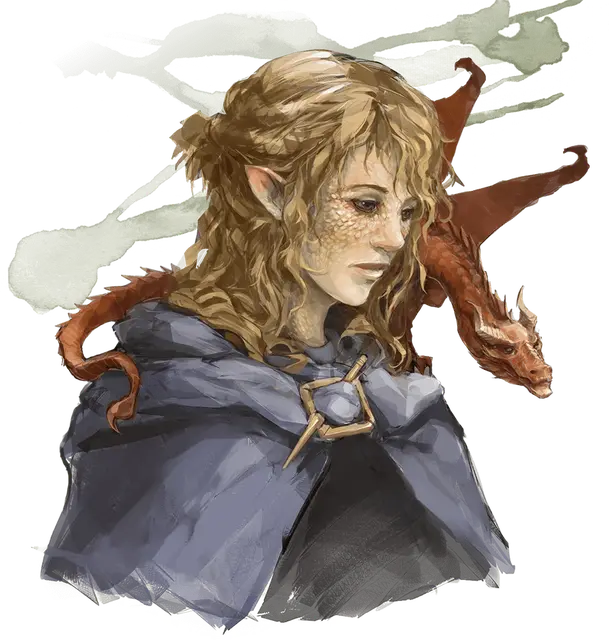

Зандала
Xandala
Средний Гуманоид (Полуэльф), нейтрально-злой, именной НИП

Класс Доспеха 13 (природный доспех)
Хиты 71 (11к8 + 22)
Скорость 30 футов
| мод | спас | ||
|---|---|---|---|
| СИЛ | 10 | +0 | +0 |
| ЛОВ | 11 | +0 | +0 |
| ТЕЛ | 14 | +2 | +7 |
| мод | спас | ||
|---|---|---|---|
| ИНТ | 18 | +4 | +4 |
| МДР | 16 | +3 | +6 |
| ХАР | 18 | +4 | +4 |
Навыки Выживание +6, История +7, Магия +7, Обман +10, Проницательность +6
Чувства пассивное Восприятие 13
Языки Общий, Дварфийский, Драконий, Полуросликов, Эльфийский
Опасность 7 (2900 опыта)
Бонус мастерства +3
Особенности
Использование заклинаний. Зандала является заклинателем 9-го уровня. Её базовой характеристикой является Харизма (Сл спасброска от заклинаний 15, +7 к атакам заклинаниями). Зандала знает следующие заклинания чародея:
• Заговоры (неограниченно): брызги кислоты [acid splash], огненный снаряд [fire bolt], свет [light], волшебная рука [mage hand], луч холода [ray of frost];
• 1 уровень (4 ячейки): цветной шарик [chromatic orb], падение пёрышком [feather fall], щит [shield];
• 2 уровень (4 ячейки): невидимость [invisibility], туманный шаг [misty step];
• 3 уровень (3 ячейки): огненный шар [fireball], полёт [fly];
• 4 уровень (3 ячейки): град [ice storm], превращение [polymorph];
• 5 уровень (1 ячейка): подчинение личности [dominate person].
Ускоренное заклинание (3/день). Если она используете заклинание со временем накладывания «1 действие», Зандала можете сотворить это заклинание бонусным действием.
Персонализация Зандалы.
Идеал. «Кровь драконов течёт по моим венам. Я обречена на величие».
Привязанность. «Кольцо Зимы принесёт мне силу и бессмертие».
Слабость. «Меня окружают идиоты».
Действия
Боевой посох. Рукопашная атака оружием: +3 к попаданию, досягаемость 5 фт., одна цель. Попадание: 3 (1к6) дробящего урона, или 4 (1к8) дробящего урона, при использовании двумя руками.
Описание
Чародей полуэльфа Зандала приехала на Чульт в поисках Кольца Зимы, артефакта, которым владеет Артус Симбер. Зандала знает, что кольцо хранит Артус в течение более века, и она жаждет этой силы. Если она встречает персонажей, Зандала притворяется дочерью Артуса и пытается убедить их помочь ей найти его. Её план состоит в том, чтобы наложить на Артуса подчинение личности [dominate person], заставив отдать ей кольцо, а затем убежать, используя своё заклинание полёт [fly].
Магия Зандалы берёт свои корни из драконьей родословной, а части её кожи покрыта тонким слоем защитной чешуи. Она подружилась с псевдодраконом по имени Летний образ, который думает, что поиски кольца опасны для Зандалы, но он отказался от попыток убедить чародейку. Летний образ может начать действовать против Зандалы с помощью персонажей с добрым мировоззрением.